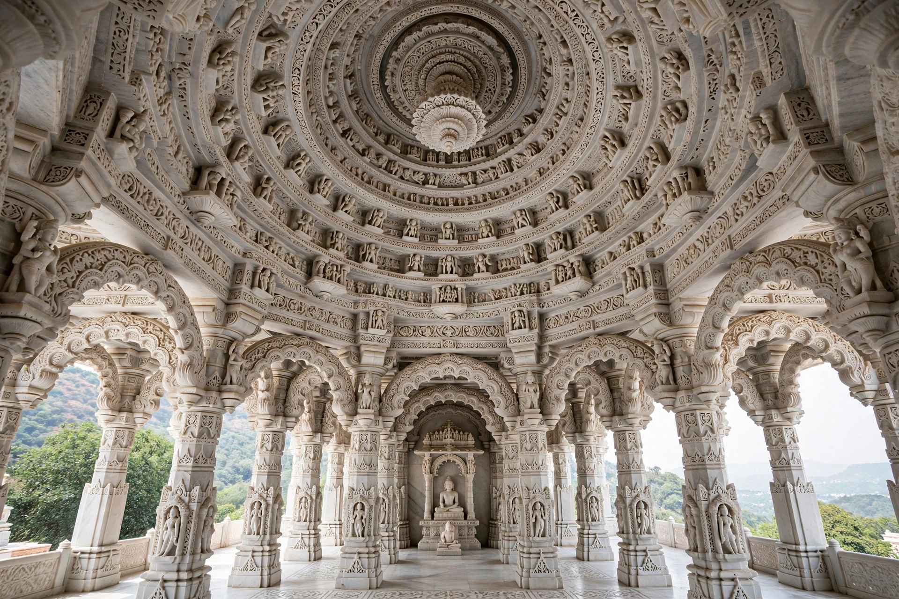

| Dilwara Temples | |
|---|---|
| Religion | Jainism (Śvetāmbara) |
| Location | Mount Abu, Rajasthan, India |
| Built | 11th–16th centuries |
| Material | White marble |

The Dilwara Temples are a group of five Śvetāmbara Jain temples at Mount Abu in Rajasthan, India, renowned for their extraordinary white-marble carving, widely considered among the finest examples of Jain architecture.
The oldest, the Vimal Vasahi (1031 CE), dedicated to the first Tirthankara Rishabhanatha, was built by Vimal Shah, a minister of the Solanki king Bhima I. The Luna Vasahi (1230), dedicated to Neminatha, is famous for its pendant-like central dome carving. Three further temples — Pittalhar, Parshvanatha and Mahavir Swami — were added between the 14th and 16th centuries.
From outside the temples appear modest; inside, ceilings, pillars, doorways and elephants are carved in lace-like marble detail, including the celebrated carved dome rings and the Hastishala elephant cell.